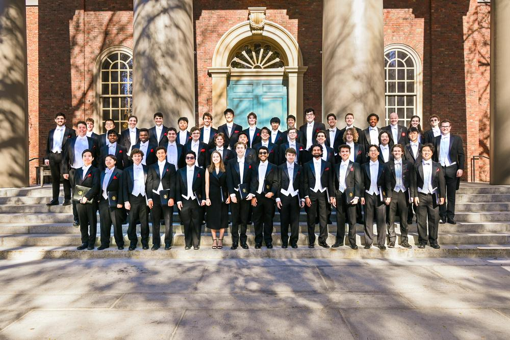
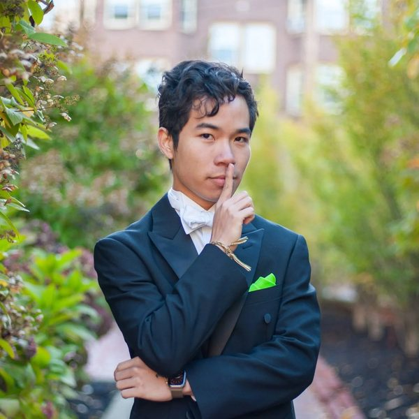
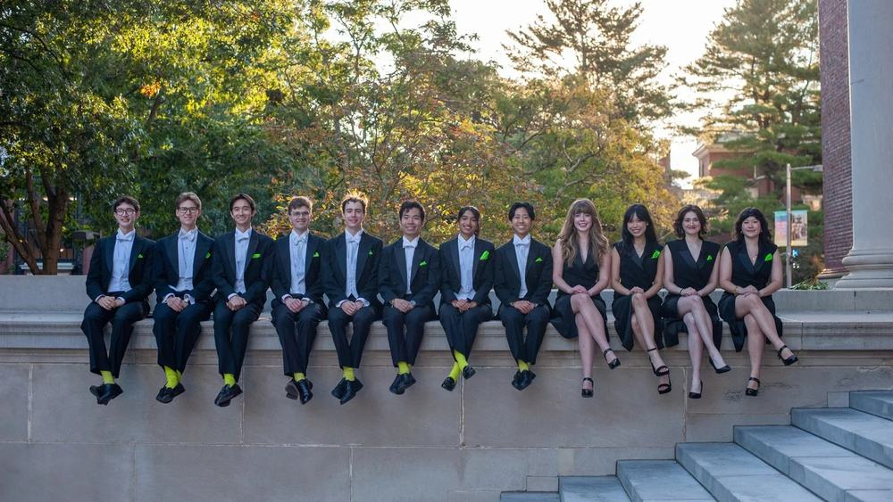
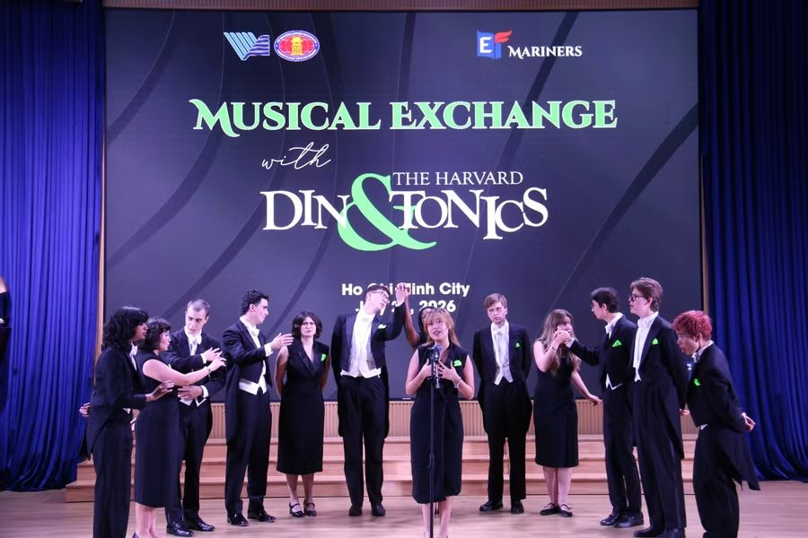
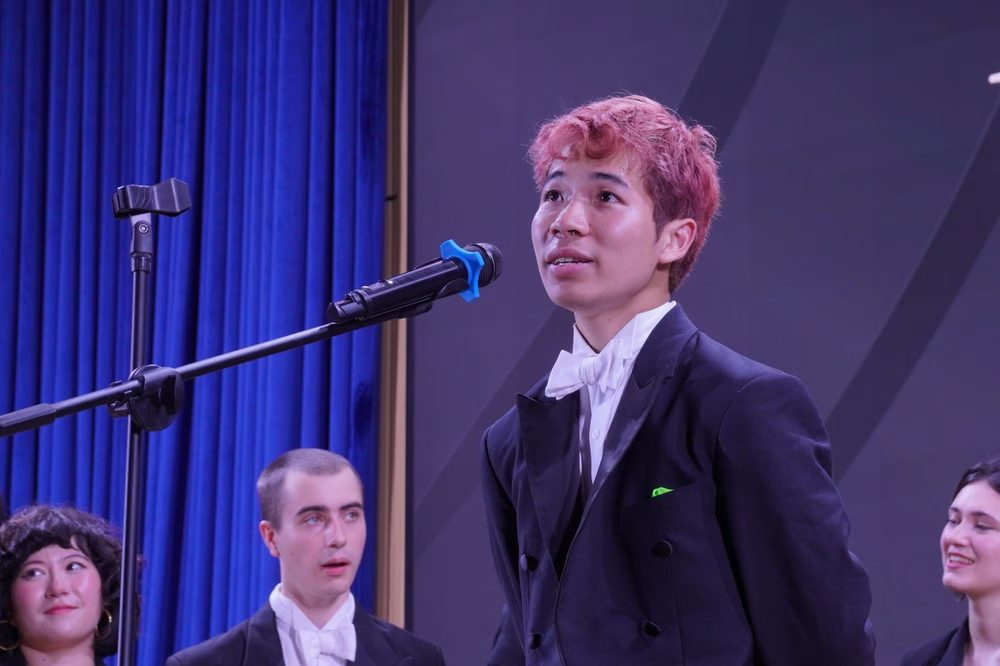
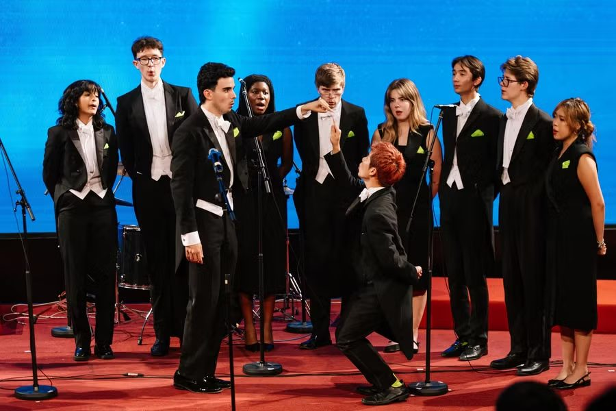
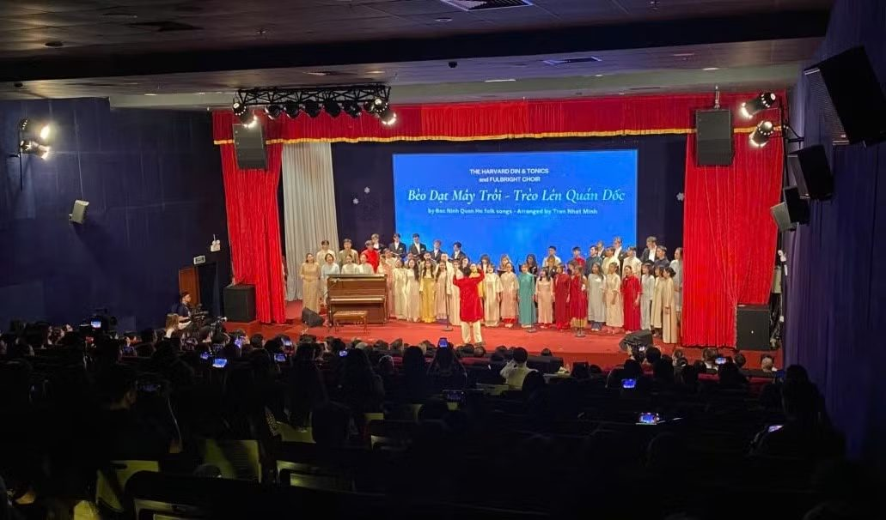

Hobbies
Outside of class, I sing with two groups at Harvard: the Harvard Glee Club and The Harvard Din & Tonics. I am also part of the Harvard Vietnamese Association.
Harvard Glee Club
Founded in 1858, the Harvard Glee Club is the oldest collegiate choir in the United States, singing tenor and bass choral music at Harvard's Sanders Theatre and on tours around the world. I joined in 2023 and sing Bass I (2025–2026 roster).
- Undergraduate Music Conductor: I work alongside the Director of Choral Activities to conduct the Glee Club, and help conduct the Harvardiana Medley at joint concerts with other colleges.
- Music Director, Glee Club Lite (Sep 2024 – Aug 2025): led rehearsals and sectionals for the Glee Club's 15-member a cappella subset and arranged 8 new contemporary a cappella pieces.
- Assistant Music Director, Glee Club Lite (from Oct 2023): occasionally conducted the group, including a performance at the U.S. Embassy in Lisbon, Portugal.
- Performed with the Glee Club in New York, Cambridge and Boston, and alongside Wellesley's Chamber Choir and St. Paul's Choir in Cambridge.
You can learn more on the Harvard Glee Club website.

The Harvard Din & Tonics

The Din & Tonics are Harvard's jazz a cappella group, founded in 1979 and known for classic American jazz, choreography, and a playful stage style. I am Din #282, sing baritone, and serve as President for 2025–2026.
As President, I oversee the officer board, coordinate joint events with other performing arts groups, and plan our tour performances over the winter and summer breaks. As I told The Harvard Crimson in January 2026, "One thing that's unique about our repertoire is that all of the music we perform is arranged by a current or former Din."
Every January the Dins tour for three to four weeks; the 2026 winter tour visited Memphis, Chicago, Los Angeles, the Bay Area, Honolulu, and New York.
We also write really quirky and funny bios just for the sake of entertainment, lowkey. My official bio that year reads "The Khang you see is actually a robot controlled from far away. The real Khang is sitting on a beach somewhere right now…"

World Tour 2026
Every other summer, the Dins go on a world tour. The 2026 World Tour ran from June to August with stops in the UK, Luxembourg, Switzerland, Denmark, France, Hong Kong, Shenzhen, Japan, South Korea, Guam, Thailand, Singapore, Vietnam, Indonesia, and Australia. In Shenzhen, I joined a Chinese-language panel to give a current Harvard student's perspective, with help from a pair of AI translation glasses (tour blog).
Bringing the Dins to Vietnam
As a Vietnamese student living in the United States, I had long hoped to bring the Din & Tonics to Vietnam. In July 2026, the group performed in Vietnam for the first time, with two shows in Ho Chi Minh City.
- July 28, Musical Exchange at USSH: the University of Social Sciences and Humanities (VNU-HCM) hosted us at Nhan Van Hall, where I joined as President with 12 other Dins. We performed 15 pieces and talked with students about our tours and our impressions of Vietnam.
- July 29, the "Miracle" Concert (Phép Màu): the first collaboration between Fulbright University Vietnam students and the Dins, held at MLC Sports Center. The idea began when I met Fulbright student Lê Thị Việt Anh during an exchange at Harvard through Fulbright's "Developing Vietnam" course. Nearly 300 people came to hear more than 20 performances, including a mashup of the Vietnamese folk songs "Bèo dạt mây trôi" and "Trèo lên quán dốc" that we sang with Fulbright students, who coached us on Vietnamese pronunciation while we shared a cappella harmony and staging. The Fulbright Choir, The Band from AV Room, and the Sedbergh Vietnam Choir also performed.




In the News
- Sinh viên Fulbright và Harvard kết nối với cội nguồn văn hóa Việt Nam qua âm nhạc (HTV, July 2026)
- Sinh viên Harvard hát 'Bèo dạt mây trôi' cùng sinh viên Fulbright Việt Nam (Giáo dục và Thời đại, July 30, 2026)
- Nhóm nhạc sinh viên Đại học Harvard mang không gian đặc sắc đến sinh viên TPHCM (Giáo dục và Thời đại, July 29, 2026)
- The Harvard Din & Tonics Perform and Connect with USSH Students Through Music (USSH-VNUHCM)
- Where Melodies Meet, Diversity Shines (Sedbergh Vietnam, July 30, 2026)
- 'Jam Packed!': Harvard A Cappella Takes Center Stage (The Harvard Crimson, January 12, 2026)
Harvard Vietnamese Association
The Harvard Vietnamese Association (HVA) celebrates Vietnamese and Vietnamese-American culture, history, and community on campus and in the Greater Boston area, with events like Tết and Trung Thu (Harvard University Asia Center).
- Outreach Chair (Jan – Dec 2024): led the Outreach Department, which handles communication between HVA and Vietnamese student organizations in Boston and across New England. I planned events with the Vietnamese student groups at Boston University, Boston College, Northeastern University, and the Massachusetts College of Pharmacy and Health Sciences, coordinated cultural holiday celebrations with Brown University's Vietnamese student association, and worked with Harvard's Vietnamese Language Program on Language Tables and cultural events.
- Outreach Advisor (from Jan 2025): as the club has grown, I moved into an advisory role, serving as a resource for the incoming Executive Board on intercollegiate communication and event planning, and training new members to take over the Outreach Department.
In March 2025, HVA co-hosted Southeast Asian Visibility Week with other Southeast Asian student groups. At the closing poetry reading, I read my English translation of Truyện Kiều (The Tale of Kiều), which I chose because it "contained quite a lot of the imagery and figurative language that ended up being commonplace in the Vietnamese language itself," as I told The Harvard Crimson.